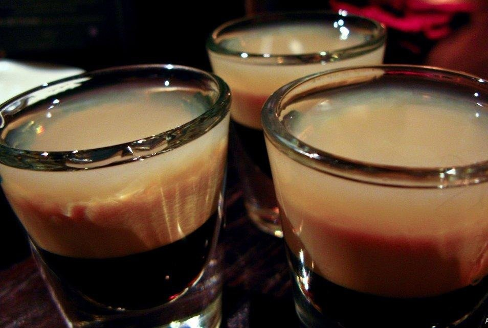
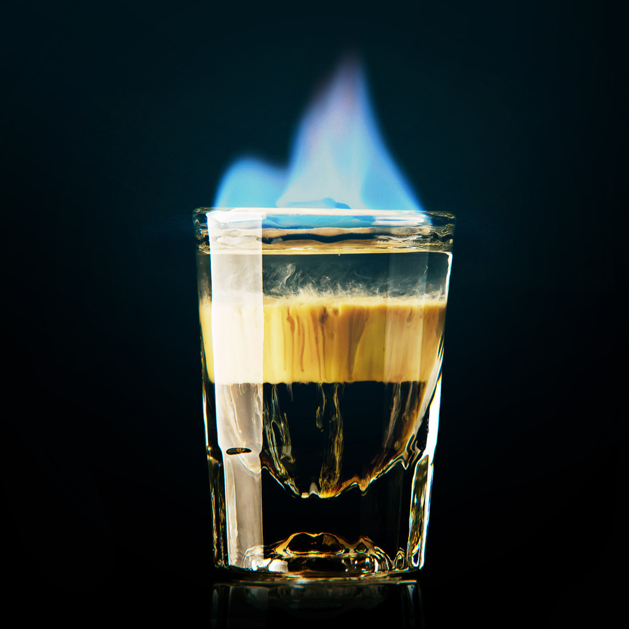
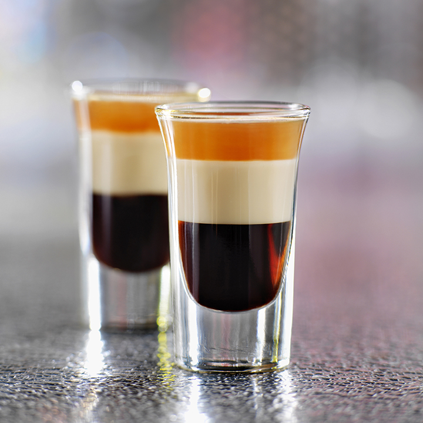

Б-52
- кофейный ликер (Kahlúa или Captain Black) – 20 мл
- сливочный ликер (Бейлиз или его аналог) – 20 мл
- апельсиновый ликер (Cointreau) – 20 мл

История создания
B-52 – алкогольный коктейль с приятным сладковатым вкусом, состоящий из трех слоев ликеров (кофейного, сливочного и апельсинового), которые наливаются в равных пропорциях. Напиток создан в 1955 году в одном из баров Малибу. Его назвали в честь американского стратегического бомбардировщика Боинг B-52 Stratofortress, который как раз в том году поступил на вооружение армии США.
Способ приготовления
Главная сложность заключается в получении равномерных не рваных слоев, которые не смешиваются друг с другом. Для этого нужно сделать следующее:
1. Налить в стопку кофейный ликер.
2. Далее по лезвию ножа или тыльной стороне ложки медленно добавить сливочный ликер поверх кофейного.
3. Этим же методом налить апельсиновый ликер.

Далее сделанный коктейль можно выпить или поступить более оригинально – поджечь его. В последнем случае вам гарантированы не только приятные вкусовые ощущения, но и незабываемое шоу.
Как пить Б-52
Коктейль правильно пить одним глотком через соломинку, опуская её к самому нижнему слою. Если перед вами подожжённый B-52, медлить нельзя, иначе соломинка расплавится.
Сначала пьющий чувствует холод нижнего слоя, потом постепенно в рот поступает более тёплый слой, а под конец коктейль и вовсе становится горячим. Это обеспечивает головокружительный эффект. Людей, пробующих Б-52 в первый раз, охватывает эйфория. Но злоупотреблять нельзя, поскольку после 3-4 выпитых порций можно сильно опьянеть.
